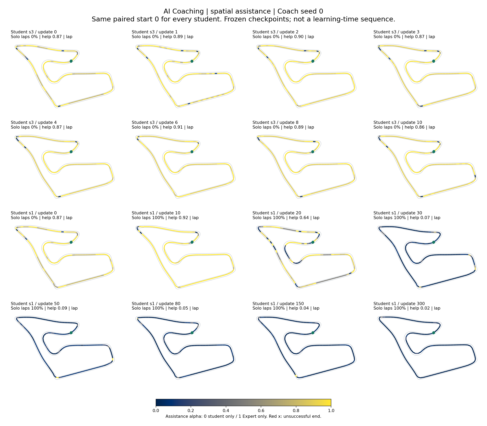
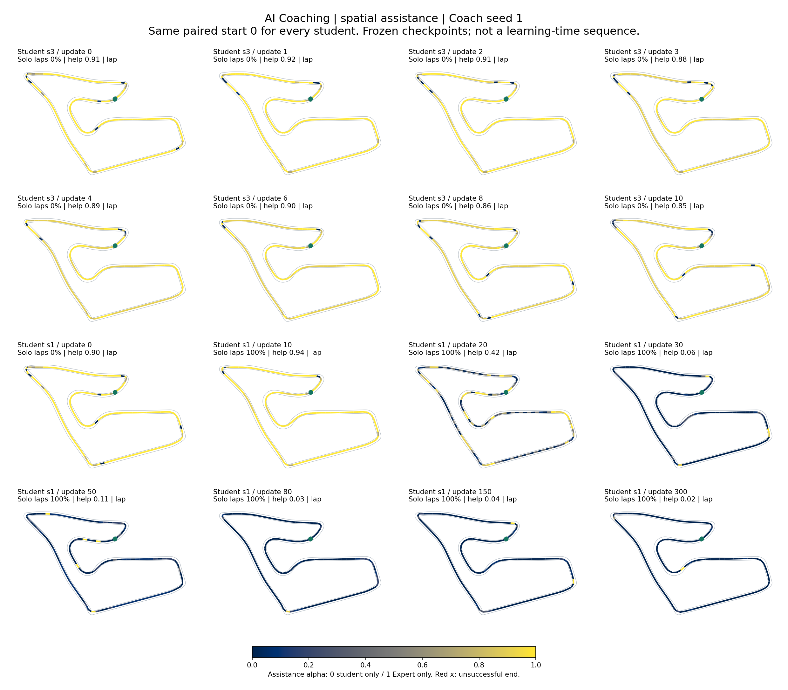

Spielberg / held-out student policies
Assistance on the track
Learned assistance α along actual driving trajectories. Every student uses the same color scale and paired starting conditions.
Assistance αFixed range: 0 – 1
0 · Student only0.51 · Expert only
Loading recorded trajectories...
- Solo laps
- --
- Coached laps
- --
- Mean α
- --
- Solo laps
- --
- Coached laps
- --
- Mean α
- --
Observed adaptation, not complete success. Students are frozen checkpoints. Both Coach seeds finish fewer laps than fixed 0.5 assistance; one misses the preset adaptation threshold. This is not evidence of student learning or a calibrated ability score.
All 16 students, same start
Paired start 0, with unsuccessful drives retained. Hollow green circle: first saved position. Filled green circle: completed lap. Red cross: unsuccessful end.
Full-size overview: Coach seed 0
Full-size overview: Coach seed 1
Measurement and interpretation
- Single-drive colors represent the α applied during each segment, not the decision after reaching its endpoint. Controls run at 20 Hz; positions were saved every 10 steps (0.5 s), with shorter terminal blocks.
- The reset position was not saved. The first block is omitted from the drawing, but included in the reported whole-episode mean. Lines are endpoint chords, not a reconstruction of high-frequency motion. Nothing is drawn after termination.
- Route means project these chords onto 128 equal-distance bins (about 2.68 m). Time weighting is applied within each drive, then the means of drives visiting that bin are averaged equally. Grey means unobserved, not zero assistance. Coverage can differ because of failure or visited-state differences.
- Student labels identify training seed and checkpoint update, not ground-truth ability. Solo/coached lap rates are measured on all 16 starts. Different source seeds are separate students, not a single learning sequence.
- Spatial differences are descriptive: turn geometry, speed and action disagreement can all affect α. This figure alone does not establish why the Coach chose to intervene.